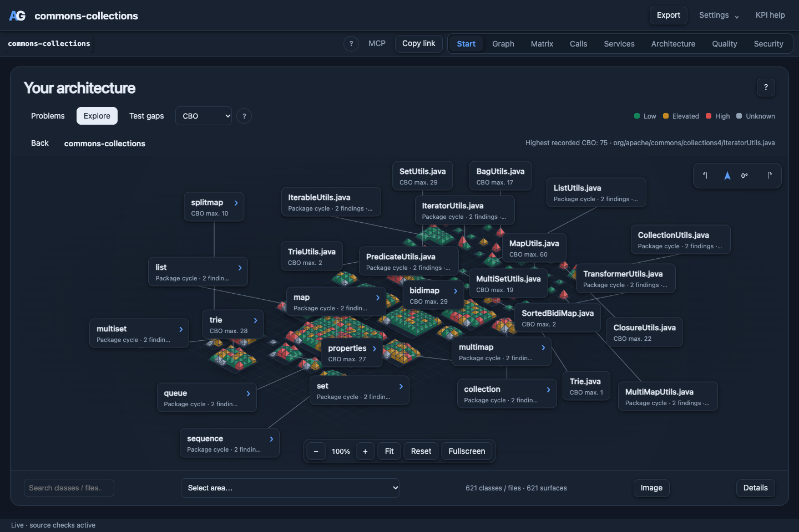

Viewer guide
Navigate from a repository overview to packages, files and source evidence.
World View
Start presents an architecture landscape. In repository mode, it shows discovered projects and service relationships. In a source project, it shows the available packages, classes or files. These are different scopes: repository-level relationships are not automatically source-level calls.
| Action | Control |
|---|---|
| Zoom | Mouse wheel; pinch on touch devices. |
| Pan | Left-drag, or drag with one finger. |
| Rotate | Right-drag, Shift-drag, Q/E, or the rotation buttons. Touch supports two-finger rotation. |
| Inspect a package | Select a package label or open its surface. Use Back or the breadcrumb to return. |
| Open a service | Select its surface and use Zoom into service, or choose the service in the area selector. |
| Reset framing | Use Fit for framing or Reset to restore the initial World state. |
The Problems lens highlights findings. Explore changes the displayed metric where measurements exist. Unknown values are distinct from low values. A terrain height or color is meaningful only together with the selected metric and its scope.
With Explore, the metric selector next to the lenses colours each class surface by Complexity (maximum cyclomatic complexity per method), CBO (other classes a class uses), RFC (methods callable from an instance), DIT (inheritance depth), NOC (direct subclasses), WMC (sum of method complexity) or LCOM4 (connected method groups; 1 = cohesive). Labels show the highest value inside a package, and the status line names the highest recorded value with its location. Grey surfaces have no measurement.

Selection and details
A single selection focuses an element and its relationships. Use Details or Enter to inspect it. Select another element to update the open details. Close with Esc or ×. The overlay avoids moving the graph; pinning can reserve a dedicated area when supported by the view.
Read the source locations, evidence type and coverage notes in the details. A displayed edge can be a source dependency, configuration reference or inferred event route; the view identifies which.
Dependency graph
The tree display preserves the package hierarchy while drawing incoming and outgoing relationships. Select a package before using Incoming, Outgoing or Both. Use All to return to the wider view and Cycles only to focus cyclic dependencies.
Expand packages only as far as needed. Aggregation changes the visible boundary, so counts at package level and file level need not be the same. A cycle group is a strongly connected set; a displayed route is an example through that set, not necessarily every possible cycle.

Tree matrix
Read rows as dependency sources and columns as target packages. A nonempty cell summarizes evidence between those boundaries. Expand a row to see its files; use search, scope and cycle filters to narrow large projects. Paging target columns does not remove those dependencies from the underlying analysis.
Matrix evidence counts can differ from the graph's count of distinct edges. Check the displayed label before comparing numbers across views.
Architecture and arc42
The Architecture view combines available documentation and generated evidence. Use the building-block hierarchy to explore deeper package levels, up to three displayed levels. The diagrams summarize the available model; they do not establish a complete system context or production deployment by themselves.
archguard doc . --arc42 --stdout
archguard doc . --arc42The first command previews Markdown. The second creates or updates arc42.md with evidence chapters while preserving manual text outside generated blocks. Keep decisions and narrative outside those blocks.
Reload and share a view
Use Copy link to retain the current project and page in a deep link. A colleague needs the same checkout, compatible ArchGuard version and a locally running server. A localhost URL points to the reader's own computer; it does not publish your running viewer.
To share a static artifact instead, use archguard graph . --format html. Generated reports can contain project names and source references; choose which artifacts to distribute.